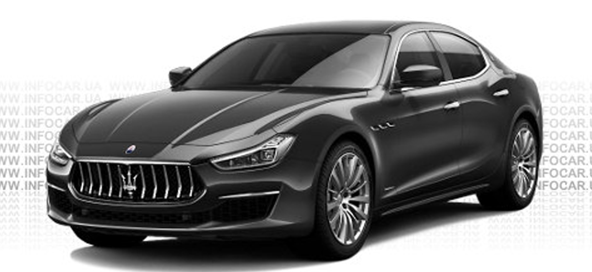

Maserati Ghibli III-седан бизнес-класса итальянской компании Maserati, который поступил в продажу во второй половине 2013 года. Он выпускается на заводе в Грульяско вместе с шестым поколением Maserati Quattroporte. В год ожидается выпуск 20 000 автомобилей по цене около 65 тыс. долларов.
Автомобиль имеет 3-литровые турбированные бензиновые и дизельный V-образные шестицилиндровые двигатели. Версии Ghibli, Ghibli s и Ghibli S Q4 также имеют бензиновые моторы, а версия Ghibli Diesel — дизельный. Все они — в совокупности с 8-ступенчатой автоматической коробкой передач. Подвеска и спереди, и сзади независимая многорычажная со стабилизатором поперечной устойчивости.